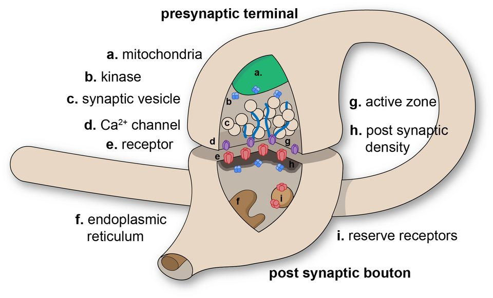
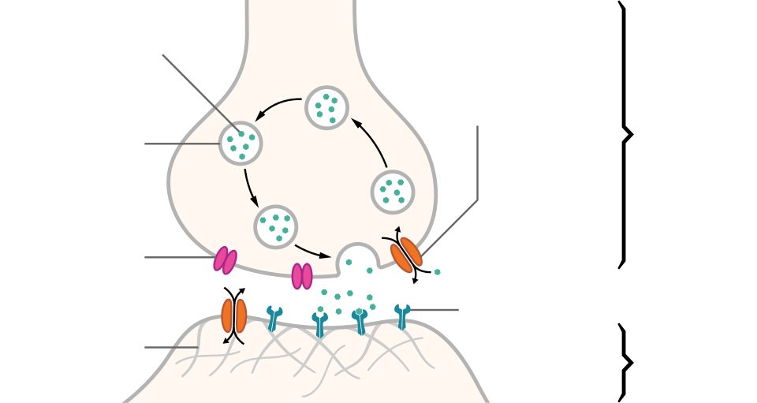

The point of contact
The synapse is where one neuron passes information to another (or to a muscle or gland). The name was proposed by Charles Sherrington in 1897, from the Greek for "to join". Each neuron can receive thousands of synapses.
Two types of synapse
- Electrical: the membranes almost touch and are joined by channels (gap junctions); current passes directly. They are very fast and synchronise groups of neurons.
- Chemical: the most common. Between the two neurons there is a small space (the synaptic cleft, about 20 nanometres wide) that the signal crosses in the form of a neurotransmitter.
How a chemical synapse works


- The action potential reaches the axon terminal.
- Calcium channels open and calcium flows in.
- Vesicles loaded with neurotransmitter fuse with the membrane and release it.
- The neurotransmitter binds to receptors on the next neuron, which is excited or inhibited.
- The signal ends: the neurotransmitter is taken back up, broken down by enzymes or diffuses away.
All this happens in less than a millisecond. Otto Loewi proved in 1921 that transmission was chemical, with an experiment he said he dreamed: fluid from a stimulated frog heart slowed down another heart.
The main neurotransmitters
| Neurotransmitter | Main function | Links with diseases and medicines |
|---|---|---|
| Glutamate | The brain's main excitatory messenger; learning | Toxic excess in stroke and ALS; memantine, ketamine |
| GABA | The main inhibitory messenger | Epilepsy; benzodiazepines, many antiseizure medicines |
| Acetylcholine | Muscle contraction; memory, attention | Myasthenia gravis; medicines for dementia; botulinum toxin |
| Dopamine | Movement, reward, motivation | Parkinson's (levodopa); schizophrenia; addictions |
| Serotonin | Mood, sleep, appetite, pain | Depression (antidepressants); migraine (triptans) |
| Noradrenaline | Alertness, attention, stress response | Depression, ADHD |
| Histamine | Wakefulness | Antihistamines that cause drowsiness; narcolepsy (pitolisant) |
| Orexin (hypocretin) | Maintains wakefulness | Its loss causes narcolepsy; medicines for insomnia |
| Neuropeptides (endorphins, CGRP, substance P) | Pain, emotions | Opioids; anti-CGRP antibodies in migraine |
Receptors
Each neurotransmitter has several types of receptor. Ionotropic receptors are channels that open instantly; metabotropic receptors trigger slower, longer-lasting chemical cascades. Most medicines that act on the brain work by mimicking, blocking or modifying these receptors, or reuptake.
Synapses that change: the basis of learning
Synapses are not fixed: they strengthen when used and weaken when not. This is long-term potentiation, discovered in the hippocampus in 1973, and the basis of memory and brain plasticity. Eric Kandel studied it in a sea slug. In childhood many more synapses form than are needed, and those that are not used are later pruned.
Sources
- Sherrington CS. The Integrative Action of the Nervous System. Yale University Press; 1906.
- Loewi O. Über humorale Übertragbarkeit der Herznervenwirkung. Pflügers Arch. 1921;189:239-42.
- Bliss TVP, Lømo T. Long-lasting potentiation of synaptic transmission in the dentate area of the anaesthetized rabbit. J Physiol. 1973;232:331-56.
- Südhof TC. The molecular machinery of neurotransmitter release (Nobel lecture). Angew Chem Int Ed. 2014;53:12696-717.